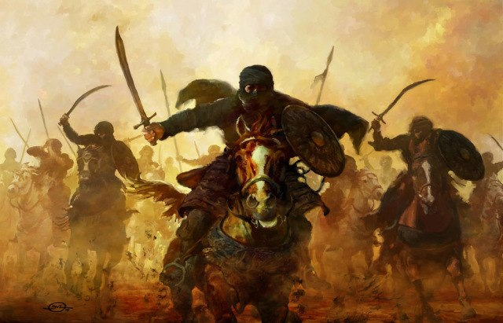
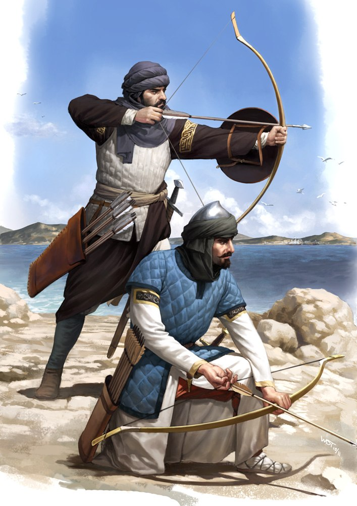
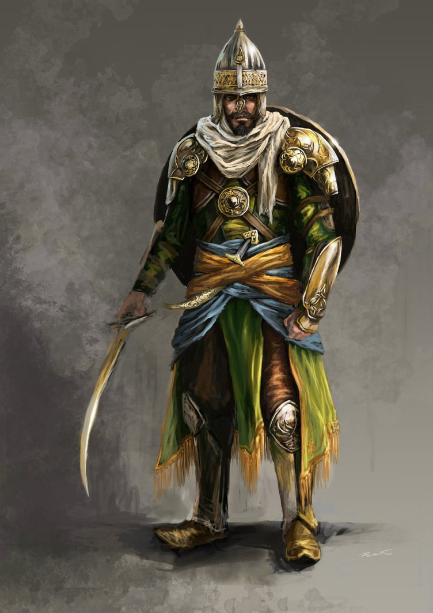

Армия Поэдрума

Основа ведения боя
В бою поэдрумцы полагаются на ловкость, техничность движений и свою хорошую реакцию. У них никогда не было тяжёлых доспехов или тяжёлых мечей: они появились на острове только с приходом наёмников, ещё в Эру Княжеств. Тем не менее техника боя Поэдрума, впоследствии гордо названная «восточной», пока ещё только зарождалась.
Поэдрумцы хорошо обращаются с древковым и колюще-режущими видами оружия. Нормально относятся и к дробящему. Луки и арбалеты имеются, и, надо сказать, довольно популярны. Так же они хорошие всадники, умело сражаются верхом, активно используют щиты. Как уже было сказано, не любят очень тяжёлое оружие или доспехи — этим обусловлена довольно высокая смертность во время войн. Тем не менее, когда приходят грамотные техники парирования и уклонения, ловкие саблисты стали большой проблемой для грузных западных мечников в тяжёлых доспехах.
Так же в бою они не чураются так называемых «нечестных» приёмов, будь то удар в пах, пускание песка в глаза и тому подобное — в бою для них не существует такого западного понятия, как честь. Есть враг — он должен быть уничтожен, или будешь уничтожен ты. Победителей не судят.
Ступени готовности
Армия имеет три ступени готовности; решение о смене этих ступеней принимает либо глава Ордена, либо совет Верховных Мейстеров.
Первая ступень — мобилизовано минимальное количество людей, рассчитано на мирное время. Тогда Поэдрум охраняют приблизительно 300 тысяч человек, расквартированных по городам.
Вторая ступень — подключается первый резерв, хорошо обученные бойцы, которые после обучения вернулись к мирной жизни. Тогда численность возрастает до миллиона человек. Рассчитано на случаи небольшого вторжения или масштабного бунта.
Третья ступень — подключаются все резервы, большинство из которых слабо или вовсе не обучено. Численность возрастает до максимально возможной — два миллиона и двести тысяч человек. Рассчитано на случаи полномасштабной иноземной интервенции, однако долго в таком режиме государство не способно функционировать.
На всех командующих и офицерских должностях — члены Ордена. Армия не имеет единой формы, равно как и оружия — стальной дисциплины нет, хотя уровень личной преданности по отношению к Ордену очень высок. Большинство из нынешних военных — это бывшие ополченцы в Войну Освобождения.

Категории войск
Войска с оружием делятся на 6 условных категорий: пикинеры — войска с древковым оружием, от глеф и алебард до копий и пик; мечники — снаряжены клинковым вооружением; лучники — лёгкие композитные луки; арбалетчики — обычно большие арбалеты, у некоторых даже имеются сошки; уланы — особо быстрые конники с древковым оружием; всадники — мечники на более выносливых и крупных конях.
Маги тоже есть в армии Поэдрума, они делятся на группы по специальности. Так же немало технических специалистов — армия хорошо обеспечена осадными орудиями, лестницами, палатками и прочим. На складах всегда имеется запас провизии. Хорошо обеспечена и лекарями, и перевязочными материалами — немудрено, ведь военное обеспечение один из основных пунктов.
Орден Воли
Из 159 тысяч человек профессиональных бойцов в Ордене порядка 115 тысяч. Из них порядка 28 — мейстеры. Это самая настоящая гвардия Поэдрума. Их обмундирование и вооружение унифицировано и обладает крайне высоким качеством. Сами бойцы очень хорошо, практически профессионально обучены, высоко мотивированны и крайне бесстрашны в бою. Обладают богатым объёмом знаний, от первой помощи до инженерии. Однако в боевой доктрине использование всех их предусмотрено только в случае обороны. В случае нападения планируется использование лишь небольших групп, как особый отряд, для проблемных участков фронта.

География Мериона · Поэдрум · Армия